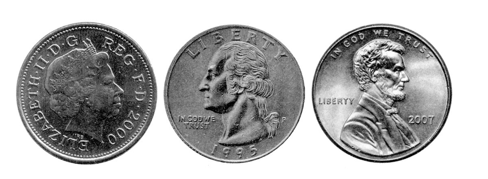
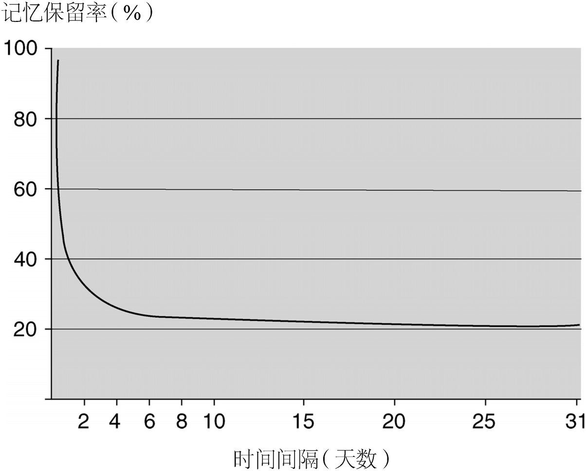

——简· 奥斯汀
事实上，无论我们做什么事，记忆都在其中发挥着举足轻重的作用，本章将就此进行重点阐述。没有记忆，我们就会无法说话、阅读、识别物体、辨别方向或是维系人际关系。为了说明这一点，我们会提供一些有关记忆的常识性观察和思考，以及文学、哲学等领域内重要思想家的相关见解。之后，我们将探讨有关记忆的系统科学研究的简要历史：从19世纪晚期的艾宾浩斯开始，到20世纪30年代的巴特利特，再到近年来，在记忆信息处理模型的语境下所进行的控制实验。最后，我们将思考当前记忆研究的主要方法，以及当代记忆研究设计的主要原则。
——威廉· 詹姆斯，《心理学原理》
在上段引文中，威廉· 詹姆斯提到了记忆的某些有趣方面，本章也将涉及记忆的这些迷人特性。但是，由于篇幅所限，对这个在心理学领域被探索得相当彻底的课题，我们当然只能触及一些皮毛。
我们能记住什么？为什么能记住？又是如何记住的？人们已经对这些课题开展了大量研究，这样做的原因是显而易见的：记忆是如此重要的心理过程。正如著名的认知神经科学家迈克尔· 加扎尼加所说：“除了薄薄的一层‘此刻’，我们生命中的一切都是记忆。”记忆能让我们回想起生日、节假日，以及在几小时、几天、几个月甚至几年前发生过的其他重要事件。我们的记忆是个人的、内在的，然而，如果没有记忆力，我们也将无法从事外在的活动——比如进行交谈、辨认朋友的面孔、记得预约时间、尝试实现新的想法、取得工作上的成功等等，我们甚至无法学会走路。
记忆指的绝不仅仅是过去经历在头脑中的重新浮现。只要某段经历在后来对一个人产生了影响，这影响本身就反映了对那段经历的记忆。
记忆那难以捉摸的特性可以从下面这个例子中窥见一斑。毫无疑问，你平日里一定见过成千上万枚的硬币。但你能准确地回忆出其中某一枚的样子吗？试试你口袋里的那一枚吧。别去看它，试着花几分钟，凭记忆画出相应面额的硬币模样。现在，把你画的和实际的硬币比对一下。你的记忆有多准确？硬币上头像的方向画对了吗？硬币上的文字你能回想起多少？（或是一个字都没想起来？）文字在硬币上的位置是否正确？
早在20世纪七八十年代，专家就针对这一课题进行了系统研究。研究人员发现，对于像硬币这样常见的事物，多数人的记忆力其实很差。我们想当然地认为，自己能轻而易举地记住这些东西——但某种意义上，这类记忆根本不存在！你可以用周围其他常见的物品来试试看，比如说邮票，或者可以回想一下公司同事或好友的日常穿着，你将会得到同样的结论。
这一发现的关键点在于：我们倾向于记住对自己而言最显著、最有用的信息。比如，我们能更好地记住硬币的大小、尺寸及颜色，却容易忽略硬币上面头像的方向和文字的内容，因为货币的大小、尺寸及颜色是对我们而言最重要的特征，这些信息有助于我们的支付和交易活动，而这正是货币诞生的直接目的。同样地，当我们去记认不同的人的时候，通常都会记住他们的面孔以及其他变化不大又具有代表性的特征，而不大会记住那些时常变化的特征（比如个人着装）。
现在我们暂且将硬币和衣服的例子放在一边。以下的情形或许能更直接明了地说明记忆的作用：某个学生在听完一堂课后，在考场上顺利地回忆起课上讲授的内容。早在学生时代，我们就对这类记忆非常熟悉了。但我们或许很少意识到的是，即使这个学生没能“想起”那堂课以及课上所讲的内容本身，而只是泛泛地运用了课上所讲的内容（也就是说，他没有关于这堂课的情景记忆 ，他并没有想起那堂课，没有回忆起当时情景中的具体信息），记忆仍然在他的脑海中发挥着重要的作用。
当这个学生综合使用课堂上所讲授的信息时，我们便可以说这些信息进入了他的语义记忆 ，这种记忆类似于我们平时所说的“常识”。此外，如果这个学生日后对这堂课所涉及的话题产生了兴趣（或者恰恰相反，极其不感兴趣），这本身可能就体现了对那堂课的记忆，即使这个学生无法有意识地回想起他上过什么课、课上讲了什么内容。
同样，无论我们是否有意识地去学习，记忆都在发挥作用。事实上，我们平时很少像学生读书那样，努力往头脑中“刻录”各种信息，以便牢牢地记住。相反，大多数时间里，我们只是正常延续着每天的生活。但如果日常生活中有重要事件发生（在我们成为现代人类的进化历程中，这类事件往往与“威胁”或“奖励”有关），我们特有的生理和心理模式便会开始运作，因此我们会比较容易记住这些事件。例如，多数人都曾忘记自己把车停在了大型停车场里的什么位置。但如果我们在停车场里发生了事故，撞坏了自己的车或邻位的车，我们便会产生本能的应激反应，从而把这类事件（以及我们当时的车位）记得尤其清楚。
因此，记忆的清晰程度并不取决于人们想要记住这件事的意愿强烈程度。此外，只要过去的事件影响了我们的想法 、感觉 或行为 （就像之前所探讨的学生上课的例子那样），就足以证明我们对这些事件存有记忆。无论我们是否打算提取和使用过往的信息，记忆都会发挥作用。许多往事的影响都是无意间发生的，而且可能会出乎意料地“跳进脑海中”。学者们在过去几十年中的研究表明，记忆信息的提取甚至也可能与我们的意愿相左。这一问题在时下的许多研究（例如创伤后的记忆恢复问题）中已经成为热点话题。

图1 我们对于非常熟悉常见的事物（例如硬币）的记忆力，通常比我们想象中的要差很多
关于记忆是如何形成的，人们曾提出过很多不同的模型，最早的可追溯至古典时代。柏拉图将记忆看作一块蜡版，上面可以留下印记或编码 ，随后存储 下来，以便我们日后提取 这些印记（即记忆）。编码、存储和提取这三者的区分，直到今天仍被研究者们沿用。其他古典时期的哲学家还曾将记忆比作鸟舍里的鸟，或是图书馆里的书，这强调了“追忆”的难度：提取特定的信息，犹如抓到特定的那只鸟或找到特定的那本书，难度可见一斑。
现代的理论家们已经开始认识到，记忆是一个选择性 、解释性 的过程。换言之，记忆不仅仅是被动地储存信息。在学习和存储新的信息之后，我们可以对其进行选择、解释，并将不同的信息相互整合，从而更好地运用我们学会和记住的信息。这或许就是为什么象棋专家能轻松地记住棋盘上各个棋子的位置，而足球迷能轻松地记住周末球赛比分的原因：他们在相关领域内拥有丰富的知识，而他们知识体系内的不同要素之间又彼此关联着。
然而我们的记忆力远远谈不上完美。正如作家、哲学家C.S.刘易斯概括的那样：
图2 鸟舍中的鸟：提取正确的记忆曾被喻为从装满鸟的鸟舍里抓到特定的某只鸟
要在这个世界上有效地运转，有些事情我们需要记住，有些则无须记住。前面我们已经留意到，需要记住的事情常常具有进化上的重要意义：在与“威胁”或“奖赏”相关的情形下（无论是实际存在的，还是自己认为如此的），相应的大脑机制会被激活，从而令我们能更好地进行记忆。
沿着这一线索来思考，许多当代学者认为，记忆机制最重要的特点在于：这是一个动态的活动 ，或者说是一个过程 ，而不是静态的实体 或事物 。
虽然有关记忆的个人观察和轶事颇有趣味和启发性，但这通常来自某一个人的具体经历，因此客观真实性以及普遍适用性均有待商榷。而系统的科学研究则可以为相关课题提供独特的洞见。其中，赫尔曼· 艾宾浩斯曾在19世纪晚期针对记忆和遗忘进行了一系列经典的研究。
艾宾浩斯自学了169个音节组，每组都包含13个无意义的音节。每个音节包括“毫无意义的”三个字母，以辅音—元音—辅音的方式组成（例如：PEL）。经过21分钟到31天不等的时间间隔之后，艾宾浩斯再次对这些音节组进行记忆。他对这段时间内的遗忘率尤其感兴趣，并使用“节省量”（再次学习时所节省的时间与初次学习时间的比值）来衡量遗忘的程度。
艾宾浩斯发现，遗忘速度大致呈现负指数规律变化，即在学习完材料后的最初阶段，遗忘进展得很快，之后，遗忘的速度会慢下来。所以，遗忘速度是呈负指数规律的，而不是线性的。这一观察已然经过时间的检验，适用于一系列不同的学习材料和学习条件。因此，如果你离开学校后不再学习法语，那么在最初的12个月里，你对法语词汇的遗忘会发生得非常快。但随着时间继续推移，你的遗忘速度将会降低。如果你五年或十年后再学习法语，你会吃惊地发现自己还能记住这么多词汇（与几年前你所能记住的相差不多）。
艾宾浩斯还发现了记忆的另一个有趣特点。对于那些“丢失了的”信息，例如那些被遗忘了的法语词汇，你能比初学者更快地再次掌握它们（这就是艾宾浩斯提出的“节省”的概念）。这一发现意味着，这些“丢失了的”信息一定还在大脑中留存着痕迹。这也证实了无意识 认知的重要性：显然我们已经无法有意识 地记住这些“丢失了的”法语词汇，但研究表明，我们在潜意识里仍然留有相关的记忆。我们会在后面的章节中对此进行探讨。著名心理学家B.F.斯金纳也提出过与此密切相关的观点，他写道：“教育是经历了学习和遗忘后仍留存下来的东西。”对此我们可以补充：“在有意识的记忆中遗忘了，但仍然以其他的形式留存着。”
艾宾浩斯的经典著作《论记忆》（On Memory ）于1885年出版。该著作涵盖了艾宾浩斯在记忆研究方面的许多不朽贡献，包括无意义音节实验、遗忘的负指数规律变化、“节省”这一概念的提出，以及艾宾浩斯在他的研究中系统探究的一些问题，例如重复对记忆的影响、遗忘曲线的形状、诗歌与无意义音节的记忆效果对比等等。艾宾浩斯所采用的实验研究法具有非常重要的优势，它对许多可能扭曲实验结果的外部因素进行了控制。艾宾浩斯把他所使用的无意义音节称为“一律毫不相关”的，并将这一点视为其研究方法的优点。但是，他也可能由于同样的原因遭到诟病，因为他没有使用更具意义的记忆材料。业内一些学者曾提出，艾宾浩斯的方法有些过于简单化，将精妙的记忆过程简化成了人造的、数学的构成。虽然艾宾浩斯采取了科学、严谨的步骤，从而将记忆机制分割为容易处理的组成部分，但这种方法的风险在于，那些真正令记忆在日常生活中发挥作用的本质方面（甚至是决定性的方面）有可能被剔除了。因此，我们需要问一个重要的问题：艾宾浩斯的发现在多大程度上概括了人类记忆作为一个整体机能的特点？

图3 艾宾浩斯发现，在自学由“辅音—元音—辅音”组成的三字母音节组后，他的遗忘速度大致呈现负指数规律变化（即遗忘在最初发生得很快，之后遗忘的速度会慢下来）
记忆研究领域内第二个伟大的体系出现在20世纪上半叶，即艾宾浩斯之后的几十年，这一体系以弗雷德里克· 巴特利特的研究为代表。在1932年出版的著作《回忆》（Remembering ）中，巴特利特对红极一时的艾宾浩斯的研究提出了质疑。巴特利特认为，利用无意义音节进行的研究并不能很好地反映现实生活中人们的记忆是如何运作的。他提出了一个重要的问题：生活中，有多少人会花时间去记忆无意义的音节？艾宾浩斯努力做到让测试材料不具备意义，巴特利特却反其道而行，着重使用本身具有意义的材料（更准确地说，是我们试图赋予意义的材料），而他选择的受试者将在相对自然的条件下对这些材料进行学习和记忆。的确，我们自然而然地就会为周围发生的事情赋予意义，这似乎是“人类本性”的基本特点之一。这一点在巴特利特的很多著作中都有所强调。例如，在巴特利特的一些最有影响的研究中，受试者曾被要求阅读一些故事（其中最有名的一篇叫作“鬼的战争”），然后再将故事回忆出来。巴特利特发现每个人回忆故事的方式都独具一格，但他也找到了一些普遍的趋势：
巴特利特认为，对于要记住的事件，人们的情感色彩和关注程度存在不同，这多少会影响实际被记住的内容。用巴特利特的话说，记忆会保留“一些鲜明的细节”，而我们记住的其他内容只不过是在原有事件的影响下，我们自己精心加工后的产物。巴特利特将记忆的这一关键特征称为“重建”，而非“再现”。换言之，我们对过往事件和故事的记忆不是一种复制 ，而是基于既有的预设、期望以及我们的“心理定势”而进行的重建 。
举例而言，想象一下，分别支持不同国家（英国和德国）的两个人在各自报道刚看过的同一场足球赛（英国队对德国队）。球场上进行的是同样一场客观发生的赛事，但是与德国队的支持者相比，英国队的支持者极有可能以完全不同的方式报道这一赛事。同样地，当两个人看同一部电影，他们对于电影内容的描述会较为相似，但同时也会存在很大的不同。他们的描述为什么会有差别呢？这取决于他们的兴趣点、动机以及情绪反应，取决于他们如何理解眼前的故事。同样，在上届大选中为现任政府投票的选民和为反对党投票的选民，对同一件国家大事——比如一场战争——的记忆也会非常不同。这些例子也暗示出，社会因素（比如人们心中的刻板印象）会影响我们对事件的记忆。
因此，巴特利特和艾宾浩斯在记忆研究中采取的方法存在重要的区别。巴特利特观点的核心在于，人们会为自己观察到的事件赋予意义，而这会影响他们对这些事件的记忆。对于采用相对抽象、无意义的记忆材料来进行的实验室研究而言，这一点或许并不重要，艾宾浩斯所做的无意义音节实验便是如此。但是巴特利特认为，在现实世界更自然的场景中，这种对于意义的追求 是记忆运作的重要特点之一。
从巴特利特的研究中我们可以看到，记忆与DVD（数字多功能光盘）或录像带不同，并非对世界的客观真实的复制。将记忆视为世界对个人所产生的影响，可能会更有助于理解。事实上，“记忆构建”这一思路将记忆描述为客观事实与个人想法、期望共同作用后得到的产物。例如，每个人观看同一部电影，体验总会存在一定差异，因为他们是不同的个体，拥有各自不同的过去，持有不同的价值取向、观念、目的、情感、期望、心境以及过往的经历。在电影院内，他们可能就坐在彼此身旁，但重要的是，他们主观上其实在体验着不同的两部影片。因此，已发生的一个事件，实际上是由经历这个事件的个人所构建的。这种构建会受到“事件”本身（在这个例子中，即影片的播放）的影响，但它同时也是每个人各自的特点和性情的产物。所有这些因素，都在个人对事件的体验、编码和存储过程中发挥着重要作用。
接着，当我们回忆时，电影中的某些部分会立即浮现在脑海里，而其他部分则可能会被我们重新构建出来。这种构建是基于我们记住的那部分，以及我们认为或相信一定发生了的其他部分——后者很有可能是通过我们对世界的推理和想象，结合我们所能记住的影片中的元素，进而推断出来的。事实上，我们极其善于进行这种重新构建，或者说是“填空”，以至于我们常常无法意识到这个过程的发生。当某段记忆被反复讲述出来，而每次讲述都伴随着不同的影响因素时，这种重新构建尤其可能发生（参见14页文框中引用的巴特利特所采取的“系列再现”和“重复再现”技巧）。在这类情况下，“重新构建”的记忆往往和“真正回想起”的事件显得同样真实。这一点是颇令人担忧的，因为当人们在追忆自己目击的凶杀事件或者自己童年时遭受的侵犯时，实际上无法确定这些信息是自己真正“记住”的，还是自己基于对世界的理解，在填补了缺失的信息之后“重新构建”的（参见第四章）。
有鉴于此，“追忆”这一行为曾被比作：一个知识丰富的古生物学家，试图将一组不完整的残骸拼凑成一只完整的恐龙。这个类比告诉我们，过去的事件令我们拥有了一组不完整的“残骸”（其中还偶尔夹杂着一些与过去事件完全不相关的“骨头”）。当我们尝试将这些残骸拼凑成原本的样子时，我们对这个世界的理解会在这一过程中发挥作用。最后我们组建出来的记忆，可能包含一些来自过去的真实部分（即“真正的恐龙骨头”），但是，就整体而言，这仍然是当下对过去的一次不完美的重建。
巴特利特曾经仿效艾宾浩斯，尝试使用无意义音节进行更深入的实验，但结果，用他自己的话来说，是“让人失望的，而且越来越令人不满意”。于是，他将材料换成了“本身具有一定趣味性”的普通散文，而这种材料正是艾宾浩斯舍弃不用的。
巴特利特在实验中使用了两种基本方法。第一种是“系列再现”，类似于耳语传话的游戏：第一个人将一些内容传给第二个人，第二个人又将同样的内容传给第三个人，以此类推。最终，研究者将小组里最后一个人听到的内容与原始信息进行比较。
第二种方法是“重复再现”，指的是同一个人在学习某内容之后的一定时间内（从15分钟到几年不等），反复地复述该信息。
巴特利特在记忆研究中采用的最著名的散文材料是一则印第安人的民间故事，叫作“鬼的战争”：
巴特利特选择这则故事，是因为它不符合实验参与者们所熟悉的英语叙事传统。在英美人听来，这故事很不连贯，甚至有些支离破碎。巴特利特预感到，这会让他的受试者们在复述过程中加进更多的修改。
例如，以下是某个受试者第四次复述时所说的，他第一次听到这故事是在几个月之前了：
从实验中，巴特利特得出了结论：人们倾向于把他们正在记忆的材料合理化。换言之，他们试图让材料更好理解，并将其修改成让他们感觉更舒服的内容。巴特利特对这一现象的总结如下：
人们的确经常发现自己的记忆有些不可靠；目睹同一事件的两个人，复述出来的内容也往往不甚相同。从巴特利特的研究结论来说，这一切恐怕都没有什么可惊讶的了。
在介绍过记忆研究的实验领域内最有影响的两个人物之后，接下来我们将探讨一些更为现代的研究方法和成果。
对记忆的研究，可以通过很多方法在很多情况下进行。凭借操控技术，人们也可以在现实生活中研究记忆。不过，迄今为止，关于记忆的大多数客观研究是由实验构成的：在经过控制的条件下（通常是在实验室环境里），采用一组需要记住的词语或其他类似的材料，将不同操作带来的结果进行对比。这些操作可能涉及对记忆有影响的任何变量，包括材料的性质（比如，是视觉刺激还是语言刺激）、受试者对材料的熟悉程度、记忆环境和测试环境之间的相似度，以及学习的积极性等等。在过去的实验中，研究者们已经使用过以下刺激物作为记忆材料：单词组，类似艾宾浩斯所使用的无意义音节，数字或图片；其他类型的材料还包括文本、故事、诗歌、预约的时间地点，以及生活事件。
近几十年内对记忆进行的实证研究，通常是在信息处理的语境下，用“二战”后多数研究者所使用的计算机模型对实验结果进行解读。在这样的框架下，研究者普遍认为，人类记忆（以及其他认知能力）的功能特性与计算机信息处理的特点十分相似。（这一类比强调的是计算机的功能属性，或者说软件 ，而非硬件 。）艾宾浩斯和巴特利特的早期研究通常专注于对个体案例（甚至是对艾宾浩斯本人的研究！）进行深入考察，相比之下，近年的研究往往包括大量的受试者。研究者们运用强大的推论统计技术，对分组实验的结果进行分析，从而使我们能客观地解读实验结果的规模和重要性。
只要我们经历的事件对我们此后的行为产生了影响，就能证明记忆的存在。但是我们怎样才能确定，之后的行为的确是被过去的事件所影响的呢？在本章的最后一部分，我们来探讨当代学者研究记忆的一些方法。
试试看：写下首先浮现在你脑海中的15种家具，然后和章末 上的列表进行比较。两个列表可能有一些重合。如果你事先已经看过一份写着家具名称的列表，并被要求记住它，我们是否可以合乎逻辑地推断，你罗列出的名称来自你对先前那份列表的记忆？这并不是一个可靠的推断：有些家具或许是你从先前的列表中有意识地回想起来的，其他一些可能来自先前那份列表所产生的间接或无意识的影响，但还有另外一些，你想到它们可能仅仅只是因为它们本来就属于家具（换句话说，完全不是因为你事先看过那个列表）。因此，我们并不能得出以下结论：你写出的列表同之前那份列表之间重合的程度，是衡量你对先前那份列表的记忆的有效标准。这是因为，发生重合的原因可能是前面提到的任何一种。
家具列表的例子反映了记忆研究中的一个重要问题。我们已注意到，记忆是无法被直接观察到的，这跟观察一场暴风雨或是一次化学实验完全不同。记忆是从行为的变化中推测出来的，我们一般需要通过观察受试者在设计好的任务中的行为变化来观测记忆。但是，受试者在任务过程中的行为变化不仅会受到对原始事件的记忆的影响，还会受到其他因素的影响，比如个人的动机、兴趣、常识以及相关的推理过程。因此，在系统地研究记忆的功能特性时，区分以下两点非常重要：1） 哪些是观察到的 （这往往会受到其他非记忆因素的影响）；2） 哪些是推断出来的 。
为了解决这个问题，在记忆研究中，我们通常会对比不同的受试者小组，每组涉及对记忆的不同操作。某一过往事件，或者某种对记忆的操作，都只在一个小组内出现，不涉及其他的组。在选择所有组内的受试者时，需要确保他们在所有可能相关的维度上都是一致的，至少要非常接近：例如，各组在年龄、教育程度和智商方面都不应有差异。这样的实验设计，是本书所探讨的绝大多数（即便不算全部的话）材料的基础。其中的逻辑是，在不同组的受试者之间，已知的相关差异就在于有或没有对某事件的记忆，或者这种记忆是否受到了某种操控，那么，此后观察得到的不同组间的差异就应该能反映对这个事件的记忆程度。但需要注意的是，这仅仅是一个假设，尽管通常而言这是个合理的假设。除此之外，确定不同组的受试者之间不存在其他可能会影响研究结果的差异，也是至关重要的。
下面我们来看一个这种研究方法的例子，这个例子来自对“睡眠中的学习”这一现象的系统研究。假设，你睡觉时给自己播放录有信息的磁带，希望或期待可以记住这些信息。你怎样才能知道听磁带是否有效呢？为了回答这一问题，你可能会在一些人睡觉的时候给他们播放这些信息，然后把他们叫醒，观察他们的行为是否能反映之前播放的任何信息。伍德、布特森、希尔斯特伦和沙克特曾经就此进行过实验。在受试者睡着后，工作人员会大声朗读出成对的单词，每一对都由一个类别名称和一个该类别中的物品名称组成（例如：“金属：黄金”），每一对都会重复朗读几遍。十分钟后，再把受试者唤醒，要求他们根据所给出的类别，说出他们能想到的物品名称。这一研究的基本假设是，如果受试者能记住他睡着时工作人员朗读的单词，那么在他随后列举的金属中就很有可能包括“黄金”。
但是，正如上文所提到的，要对记住的信息进行有效推断，如果仅仅观察有多少受试者睡眠时“听到”的内容出现在了他们醒来后列举的单词组中，显然并不足够。比如，即使受试者睡着时工作人员没有朗读“黄金”一词，许多受试者在后来列举金属时还是会提到“黄金”。根据上文提到的好的研究设计原则，为了解决此类问题，研究者可以考察不同的实验组在不同实验条件下的表现差异。
在研究中，伍德和他的同事们进行了两种对比。第一种对比是在不同的实验组之间：工作人员朗读单词组时，一些受试者醒着，而另一些是睡着的。受试者是随机分配到“睡眠组”或“清醒组”的，因此，对朗读过的内容分别在这两组中出现的频次进行比较，就能说明人们究竟更容易受以下哪种情况的影响：1）清醒时听到朗读；2）睡眠中“听到”朗读。实验结果显示，那些醒着听到工作人员朗读的受试者提到所朗读内容的比例，比睡眠中“听到”朗读的受试者要高出两倍多。这项对比的结果并不出人意料，它说明清醒时学习的效果要比睡着时学习的效果好。然而需要注意的是，这个实验并不能排除另一种可能性：对那些睡着的受试者而言，他们“听到”的朗读也能对他们后来的记忆表现发挥正面作用。
研究者们因此又进行了另一项重要对比，相当巧妙地再次进行了测试。他们在研究中使用了两份不同的单词组列表，其中一份包括“金属：黄金”，而另一份包括“花卉：蝴蝶花”。面对所有睡着的受试者，工作人员会朗读其中某一份单词组列表。而受试者被叫醒之后，会被问到两份单词组列表中的内容。这样的流程可以让实验者比较，在受试者被叫醒后所列举的单词组中，睡着时“听到”过的词组出现的频率是否高于没听到过的词组。换句话说，研究者对同一个受试者也进行了多方位的观察和比较。
比较这些在睡眠中“听到”了不同词组的受试者，结果显示：无论工作人员有没有对他们朗读过某些单词组，他们后来提到这些内容的频率并没有真正的区别。然而，如果工作人员朗读单词组时受试者是清醒的，那么，类似的比较表明，工作人员的朗读对受试者的单词记忆具有显著的影响。
从这一章中我们已经知道，无论我们做什么事，记忆都在其中发挥着至关重要的作用。没有记忆，我们就会无法说话、阅读、识别物体、辨别方向或是维系人际关系。虽然有关记忆的个人观察和轶事颇有趣味和启发性，但这往往只是来自某一个人的具体经历，因此，这些观察究竟在多大程度上普遍适用于所有个体，是值得探讨的。我们已经从艾宾浩斯和巴特利特的研究中看到，系统的研究可以就人类记忆的功能特性带来重要的洞察。近些年，我们已经可以凭借强大的观察和统计技术来系统地分析记忆的功能特性，对于精心控制的实验所得的结果，我们已能够解读其规模和重要性。本书的下面几章将探讨这类研究所获得的一些突出成果。我们将会看到，把记忆视为一种活动 ，而非静态的事物 ，是更为准确的。此外，近来最重要的科学发现之一就是，记忆是多种功能的集合，因此不应将记忆视为单个的实体（比如，“我的记忆”如何如何）。关于这一点，我们将在第二章里作进一步解释。